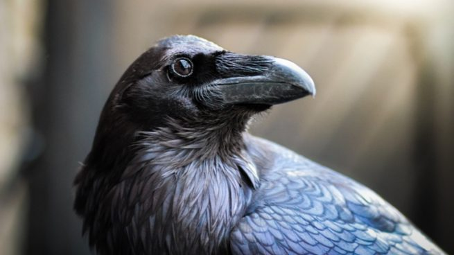

Cuervos.
Curiosidades de los cuervos.
Los cuervos son animales que suelen asociarse a cosas macabras e incluso a festividades como Halloween. La mala fama de estos pequeños pájaros no les hace ningún honor ya que cuentan con increíbles cualidades que los hace únicos. Sin ir más lejos, se les considera como uno de los animales más inteligentes del planeta, ya que son capaces de hacer cosas casi impensables para cualquier otra especie.